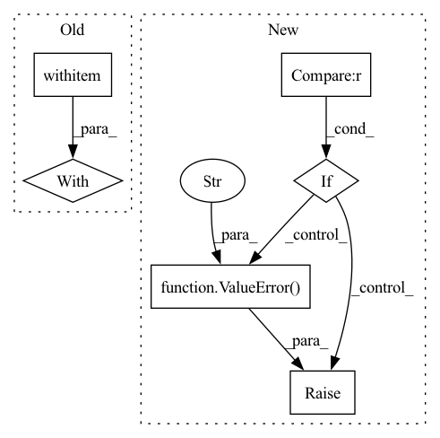

Pattern ID :5111
Before Change
@classmethod
def load(cls, path: PathStr, **kwargs) -> OrderedDict:
extension = splitext(path)[-1][1:].lower() // type: ignore
with cls .open(path) as fp:
if extension in JSON:
config = cls.from_json(fp.read(), **kwargs)
elif extension in YAML:
config = cls.from_yaml(fp.read(), **kwargs)After Change
```
if method is None :
if isinstance(file, IO):
raise ValueError("method must be specified when loading from file-like object" )
method = splitext(file)[-1][1:] // type: ignore
extension = method.lower() // type: ignore
if extension in JSON:
return cls.from_json(file, *args, **kwargs)In pattern: SUPERPATTERN
Frequency: 3
Non-data size: 6
Instances Fragment ID: 17967665
Project Name: zhiyuanchen/chanfig
Commit Name: 8a539810dd6363f380b20504d0ba81029af6ccb9
Time: 2022-11-02
Author: this@zyc.ai
File Name: chanfig/config.py
M Class Name: OrderedDict
N Class Name: OrderedDict
M Method Name: load(3)
N Method Name: load(2)
M Parent Class: OrderedDict_
N Parent Class: OrderedDict_
M File Name: chanfig/config.py
N File Name: chanfig/config.py
M Start Line: 751
M End Line: 761
N Start Line: 752
N End Line: 774
Before Change
output_examples.split_names = artifact_utils.encode_split_names(
sorted(example_uris.keys()))
with self ._make_beam_pipeline() as pipeline:
for split, example_uri in example_uris.items():
output_examples_split_uri = artifact_utils.get_split_uri(
[output_examples], split)
inferrer_step.set_output_uri(output_examples_split_uri)After Change
output_examples = artifact_utils.get_single_instance(
output_dict[PREDICTIONS])
if EXAMPLES not in input_dict :
raise ValueError("\"examples\" is missing in input dict." )
if MODEL not in input_dict:
raise ValueError("Input models are not valid, model "
"need to be specified.")
if MODEL_BLESSING in input_dict: Fragment ID: 17967669
Project Name: maiot-io/zenml
Commit Name: 1f86eb5ae94e0dc71caf2edadd7a41f84a41fa35
Time: 2021-03-18
Author: bariscandurak@hotmail.com
File Name: zenml/components/bulk_inferrer/executor.py
M Class Name: BulkInferrerExecutor
N Class Name: BulkInferrerExecutor
M Method Name: Do(4)
N Method Name: Do(4)
M Parent Class: base_executor.BaseExecutor
N Parent Class: base_executor.BaseExecutor
M File Name: zenml/components/bulk_inferrer/executor.py
N File Name: zenml/components/bulk_inferrer/executor.py
M Start Line: 49
M End Line: 101
N Start Line: 63
N End Line: 111
Before Change
if "hydra" not in task_cfg:
task_cfg, config_name = _gen_config(task_cfg)
hydra_cfg = get_hydra_cfg(overrides=hydra_overrides, config_dir=config_dir)
with open_dict (task_cfg):
task_cfg = OmegaConf.merge(
task_cfg,
dict(hydra=OmegaConf.create(hydra_cfg)),
)After Change
config_name = _store_config(config, config_name)
task_cfg = _load_config(config_name=config_name, overrides=overrides)
else:
if len(overrides) > 0 :
raise ValueError(
"Non-empty overrides provided with full config object already provided, did you mean `multirun_overrides`?"
)
task_cfg = copy.deepcopy(config)
if config_dir is not None:
config_dir = str(Path(config_dir).absolute()) Fragment ID: 17967657
Project Name: mit-ll-responsible-ai/hydra-zen
Commit Name: 14fe02bc8490312762d6c897c7697b8a7f67a9ad
Time: 2021-04-06
Author: jgoodwin@ll.mit.edu
File Name: src/hydra_utils/experimental/_implementations.py
M Class Name: AnonimousClass
N Class Name: AnonimousClass
M Method Name: hydra_launch(7)
N Method Name: hydra_launch(6)
M Parent Class:
N Parent Class:
M File Name: src/hydra_utils/experimental/_implementations.py
N File Name: src/hydra_utils/experimental/_implementations.py
M Start Line: 207
M End Line: 234
N Start Line: 91
N End Line: 203